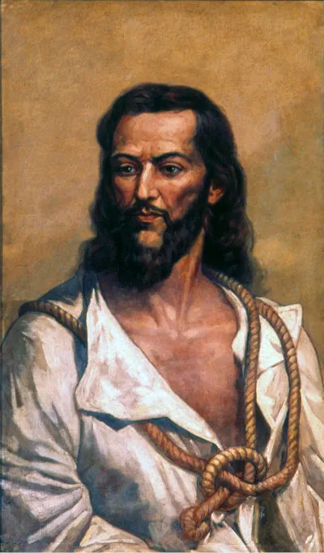
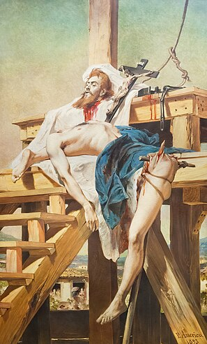

Introdução
Breve Resumo
A Inconfidência Mineira, ou Conjuração Mineira, é como ficou conhecida a revolta de caráter separatista que estava sendo organizada na capitania das Minas Gerais no final do século XVIII. Essa revolta foi organizada pela elite socioeconômica de Minas Gerais e acabou sendo descoberta pela Coroa portuguesa antes de ser iniciada. Tiradentes foi um dos envolvidos nessa revolta.
Tiradentes

De uma família de origem humilde, Joaquim José nasceu na Capitania de Minas Gerais, em 12 de novembro de 1746. Com a morte prematura dos pais, Joaquim José precisou exercer inúmeros trabalhos ao longo de sua vida, como a de dentista amador, função que lhe deu o apelido de “Tiradentes”. Ele também havia trabalhado na mineração, porém, foi no posto de alferes nos quadros da cavalaria imperial que Tiradentes alcançou certa estabilidade. Apesar da pouca instrução, ele era um republicano convicto e adepto dos ideais do Iluminismo.
Causas
O movimento dos inconfidentes, organizado em 1788, foi consequência do contato dos colonos brasileiros com os ideais iluministas divulgados na Europa, ideais que haviam, por sua vez, inspirado o movimento de independência dos Estados Unidos.
Os historiadores atribuem a divulgação do pensamento iluminista no Brasil ao contato de estudantes brasileiros com o Iluminismo ao serem enviados por suas famílias da elite econômica da colônia para estudarem na Universidade de Coimbra, em Portugal. Os ideais iluministas foram muito difundidos, principalmente, na Capitania das Minas Gerais, e isso se explica pelo fato de boa parte dos estudantes brasileiros em Coimbra ser originária de Minas Gerais.
Essa derrama havia sido determinada por Portugal em razão das dívidas acumuladas dos impostos que não estavam sendo pagos. A intransigência portuguesa na arrecadação de impostos manteve as cobranças altas, mesmo com a queda na extração de ouro na região, o que acabou por gerar o acúmulo de dívidas.
Movimento
A insatisfação com uma possível derrama mobilizou as elites da capitania contra o domínio português. Os inconfidentes planejavam assassinar o governador da capitania e proclamar o republicanismo na Capitania de Minas Gerais. Tiradentes era um dos envolvidos na conspiração, pois, além de ser um defensor dos ideais iluministas, também havia sido prejudicado pela gestão do visconde de Barbacena ao ser destituído do comando da cavalaria, que fiscalizava uma importante estrada da região.
Além da propagação dos ideais iluministas, a Inconfidência Mineira aconteceu em consequência da insatisfação das elites da Capitania de Minas Gerais com a pesada política de cobrança de impostos estabelecida pela Coroa Portuguesa sobre os colonos. O visconde de Barbacena havia sido nomeado pela Coroa Portuguesa como governador da capitania com o objetivo de promover a derrama, ou seja, a cobrança obrigatória dos impostos sobre a extração do ouro.
Essa derrama havia sido determinada por Portugal em razão das dívidas acumuladas dos impostos que não estavam sendo pagos. A intransigência portuguesa na arrecadação de impostos manteve as cobranças altas, mesmo com a queda na extração de ouro na região, o que acabou por gerar o acúmulo de dívidas.

As reuniões secretas que organizavam e divulgavam os princípios dessa revolta contra Portugal estenderam-se durante anos, mas o movimento não chegou nem ao ponto de ser deflagrado. Isso porque, antes mesmo de sua deflagração, denúncias levaram ao conhecimento da Coroa de que uma conspiração acontecia.
Em 18 de maio de 1789, alguns dos inconfidentes foram informados de que a conspiração contra Portugal tinha sido descoberta. O Visconde de Barbacena recebeu seis denúncias a respeito de uma conspiração em curso nas Minas Gerais. A denúncia mais importante foi realizada por Joaquim Silvério dos Reis.
Tiradentes acabou sendo enforcado no dia 21 de abril de 1792, no Rio de Janeiro. Foi esquartejado e partes do seu corpo foram espalhadas pela estrada que ligava o Rio de Janeiro a Minas Gerais. Sua cabeça foi colocada em exposição na praça central de Vila Rica e lá permaneceria até apodrecer, mas acabou desaparecendo e não se sabe o seu paradeiro até hoje.
A Conjuração Mineira foi uma das mais importantes revoltas organizadas contra a Coroa portuguesa e mostrou a disposição dos colonos a romper o laço colonial e a existência de ideais republicanos no seio da principal capitania brasileira. Poucos anos depois, foi a vez da Bahia rebelar-se contra o domínio português na Conjuração Baiana.